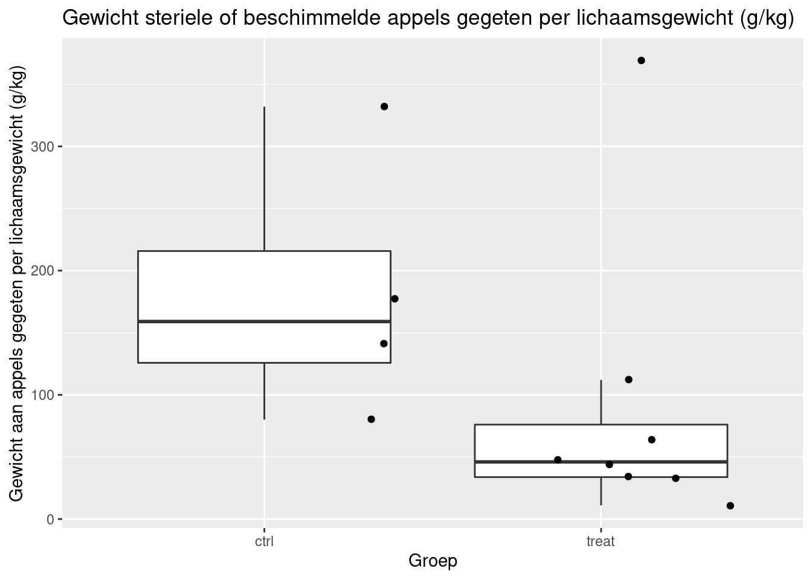

Practicum 1: Niet-parametrische test
Alexandre Segers & Lieven Clement
statOmics, Ghent University (https://statomics.github.io)

1 Eetgedrag knaagdieren:
Een bioloog onderzocht het effect van schimmelinfecties in voeding op het eetgedrag van knaagdieren. Geïnfecteerde appels werden gegeven aan een groep van 8 knaagdieren, steriele appels aan een groep van 4 knaagdieren. De hoeveelheid gegeten appel (gram) per lichaamsgewicht (kilogram) werden gemeten. De data is beschikbaar in dataset “knaagdieren”. We willen weten of er een verschil is in hoeveelheid gegeten appel per kilogram lichaamsgewicht.
suppressPackageStartupMessages({
library(tidyverse)
library(ggplot2)})knaagdieren <- data.frame(weight=c(11,33,48,34,112,369,64,44,177,80,141,332),group=as.factor(c(rep("treat",8),rep("ctrl",4))))2 Data exploratie
head(knaagdieren)We maken een boxplot voor zowel de beschimmelde appels als de steriele appels het gewicht gegeten aan appels per gewicht van het knaagdier.
knaagdieren %>%
ggplot(aes(x=group,y=weight)) +
geom_boxplot(outlier.shape = NA) +
geom_jitter() +
xlab("Groep") +
ylab("Gewicht aan appels gegeten per lichaamsgewicht (g/kg)") +
ggtitle("Gewicht steriele of beschimmelde appels gegeten per lichaamsgewicht (g/kg)")
Indien we een two-sample t-test zouden willen uitvoeren wordt verondersteld dat de data in elke groep normaal verdeeld zijn. De groep van steriele appels heeft echter te weinig observaties (4) om normaliteit na te gaan. Bovendien zien we ook een aanwijzing voor outliers. Daarom zullen we gebruik maken van een niet-parametrische test.
Ook gelijkheid van variantie kan niet worden nagegaan gezien het beperkt aantal observaties in de controlegroep.
3 Wilcoxon-Mann-Withney rank sum test (WMW test)
3.1 Nul-en alternatieve hypothese
De nulhypothese stelt dus dat beide distributies dezelfde zijn.
De alternatieve hypothese stelt dat de kans dat een willekeurige observatie van groep 1 groter of gelijk is aan de waarde van een willekeurige observatie van de andere groep afwijkt van 50%. In één van de twee groepen zal er dus een verhoogde kans zijn om hogere waarden te observeren dan in de andere groep.
\(H_0\): \(F_1(y) = F_2(y)\)
\(H_a\): \(P(Y_1 \ge Y_2) \ne \frac{1}{2}\)
3.2 Assumpties
Voor de Wilcoxon-Mann-Withney rank sum test moeten geen distributionele aannames worden gemaakt. Van de observaties wordt wel verondersteld dat ze onafhankelijk zijn van elkaar.
3.3 Test uitvoeren
We kunnen toetsen tegen afwijkingen van de nulhypothese in de richting van de alternatieve hypothese a.d.h.v. de Wilcoxon-Mann-Withney rank sum test.
wilcox <- wilcox.test(weight ~ group, data = knaagdieren)
wilcox##
## Wilcoxon rank sum exact test
##
## data: weight by group
## W = 27, p-value = 0.07273
## alternative hypothesis: true location shift is not equal to 0We kunnen de nulhypothese van gelijke distributies niet verwerpen op het 5% significantieniveau (p = 0.073). Dit wil dus zeggen dat we besluiten dat er op het 5% significantieniveau geen significant verschil is in de distributies van het gewicht van de appels die worden gegeten per kilogram lichaamsgewicht door ratten die met beschimmelde appels worden gevoederd en ratten die met steriele appels worden gevoederd.
Hoewel de test niet significant is, gaan we omwille van didactische redenen toch de probabilistische index, de effectgrootte, berekenen. De probabilistische index is de kans om een waarde te vinden voor een willekeurige observatie in de eerste groep (ctrl, steriele appels) die hoger is dan een willekeurige observatie in de tweede groep (treat, beschimmelde appels). Merk op dat de ctrl groep de referentiegroep is in R omdat de groepen alfabetisch worden gerangschikt in R.
Dit kunnen we berekenen aan de hand van de geobserveerde teststatistiek en de hoeveelheid observaties per groep.
n1 <- 4
n2 <- 8
WObs <- wilcox.test(weight ~ group, data = knaagdieren)$statistic #geobserveerde teststatistiek
WObs/(n1*n2)## W
## 0.84375In de steekproef zal een willekeurig knaagdier met een kans van 84.4% meer eten van steriele appels per kilogram lichaamsgewicht dan dat een ander knaagdier eet van beschimmelde appels. We kunnen het verschil die we zien tussen de twee groepen in de steekproef echter niet veralgemenen naar de populatie omdat deze kans niet significant verschillend is van 50% op het 5% significantie-niveau.
Merk op dat de puntschatter sterk lijkt af te wijken van 50% in de steekproef, maar dat we het verschil niet op kunnen pikken met de WMW test op het 5% significantieniveau, wat mogelijks zou kunnen wijzen op een gebrek aan power van de proefopzet. We hebben inderdaad maar 4 observaties in de controle groep…